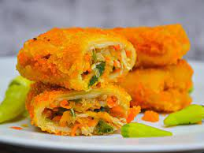

Selamat datang di Risollicious, destinasi utama Anda untuk menemukan
kelezatan risol yang tak tertandingi! Kami bangga mempersembahkan
koleksi risol berkualitas tinggi dengan berbagai varian yang memukau,
siap untuk memanjakan lidah Anda dan menghadirkan pengalaman kuliner
yang tak terlupakan.
Profil Risollicious
Selamat datang di Risollicious, tempat Anda menemukan risol
berkualitas tinggi dengan berbagai varian yang menggoda selera! Kami
menghadirkan kreasi risol yang lezat dan inovatif untuk memenuhi
keinginan rasa Anda yang paling tinggi. Apakah Anda menyukai risol
sayur yang segar, risol mayo dan daging yang gurih, atau risol bihun
yang lembut, Anda akan menemukan pilihan terbaik di sini.
Produk Risollicious
1. Risol Sayur
Risol sayur kami adalah pilihan sempurna bagi Anda yang menginginkan
cita rasa yang segar dan sehat. Dibuat dengan isian yang melimpah
dari berbagai macam sayuran segar yang dipadukan dengan bumbu rempah
yang khas, risol sayur kami akan memanjakan lidah Anda dengan
kelezatan yang tiada tara.
2. Risol Mayo dan Daging
Nikmati sentuhan kaya dan lembut dari varian risol mayo dan daging
kami. Dibuat dengan telur mayo yang lembut dan daging yang lezat,
risol ini akan memuaskan selera Anda dengan rasa yang menggugah dan
tekstur yang sempurna.
3. Risol Bihun
Risol bihun kami adalah pilihan ideal bagi Anda yang menginginkan
cita rasa yang ringan dan lezat. Dengan isi bihun yang lembut dan
bumbu rempah yang kaya, risol ini akan menjadi favorit Anda dalam
sekejap.
No.
Risollicious
Harga / -pcs
1.
Risol Sayur
Rp3.000,00
2.
Risol Mayo & Daging
Rp5.000,00
3.
Risol Bihun
Rp2.000,00
Pemesanan Risollicious
Bagaimana Cara Memesan? Pesan risol favorit Anda sekarang melalui
platform toko online kami yang mudah digunakan. Cukup pilih varian
risol yang Anda inginkan, tentukan jumlah pesanan, dan klik tombol
Beli Sekarang.
Kami akan segera mengirimkan pesanan Anda dengan aman dan cepat ke
alamat yang Anda tentukan.
Dokumentasi Risollicious

Ayo Segera Temukan Risol Berkualitas Tinggi dari Risollicious!